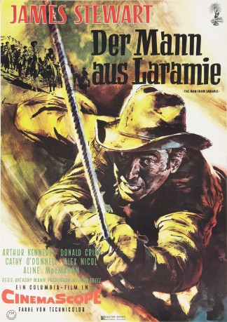

#3946 Der Mann aus Laramie
Alternativ: The Man from Laramie
 
 IMDB-Wertung: 7.4 / 10
IMDB-Wertung: 7.4 / 10  Metascore: 0
Metascore: 0 
Will Lockhart, beurlaubter Captain der Armee aus Laramie, will seinen ermordeten Bruder rächen. Verbrecherische Profitjäger hatten den Indianern geschmuggelte Schnellfeuerwaffen verkauft, und seinen Bruder kostete dieser frevelhafte Handel das Leben. Lockhart will die Verbrecher erledigen und zugleich die Hintermänner entlarven. Als Lockhart in Neu Mexico die Opfer eines Gemetzels entdeckt, bei dem die Apachen eine ganze Kavalleriepatrouille getötet haben, weiß er, dass er den Verbrechern näher gekommen ist.
Jahr: 1955
Dauer: 98 Minuten
FSK: 12
Land: USA Studio: Columbia PicturesTonspuren:
Untertitel:
Auflösung: 720p (1280x544) Größe: 3164 MB
Genre: Drama, Western
Regisseur: Anthony Mann
Drehbuch: Peer Klehmet
Soundtrack:
Darsteller:
 James Stewart als Will Lockhart
James Stewart als Will Lockhart Donald Crisp als Alec Waggoman
Donald Crisp als Alec Waggoman- Cathy O'Donnell als Barbara Waggoman
- Alex Nicol als Dave Waggoman
 Wallace Ford als Charley O'Leary
Wallace Ford als Charley O'Leary Jack Elam als Chris Boldt
Jack Elam als Chris Boldt Frank DeKova als Padre
Frank DeKova als Padre Eddy Waller als Dr. Selden , uncredited
Eddy Waller als Dr. Selden , uncredited Arthur Kennedy als Vic Hansbro
Arthur Kennedy als Vic Hansbro- Aline MacMahon als Kate Canaday
- John War Eagle als Frank Darrah
 James Millican als Tom Quigby
James Millican als Tom Quigby Gregg Barton als Fritz
Gregg Barton als Fritz- Boyd Stockman als Spud Oxton
- Jack Carry als Mule Driver , uncredited
- Bill Catching als Mule Driver , uncredited
- Frank Cordell als Mule Driver , uncredited
- Kay Koury als Indian , uncredited
- Frosty Royce als Mule Driver , uncredited
Datei: X:\HD-Western-1900-1959\Mann aus Laramie, Der (1955, FSK12, 1280x544).mkv seit 05.07.2016
Festplatte: HD Eastern+Western
 Es gibt insgesamt 98 Filme in der Gruppe 'HD-Western-1900-1959'
Es gibt insgesamt 98 Filme in der Gruppe 'HD-Western-1900-1959'